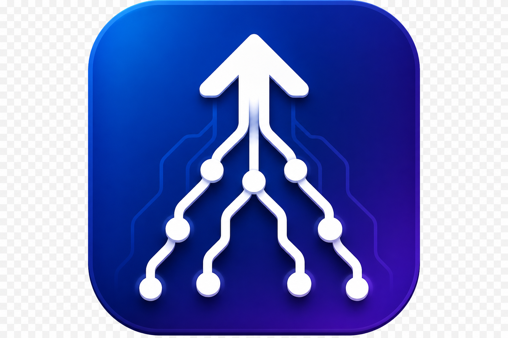
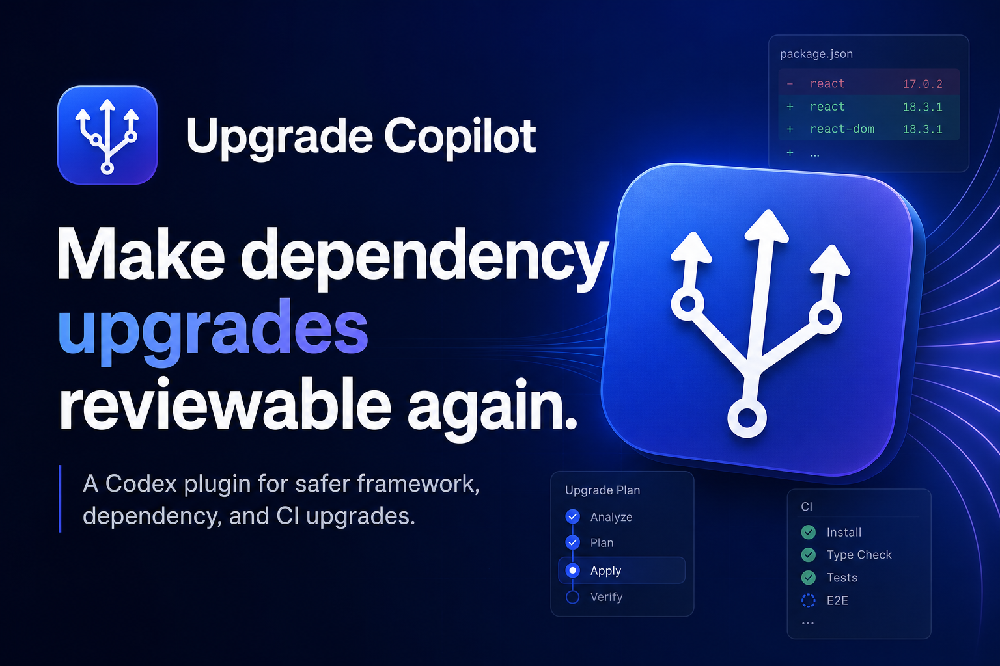
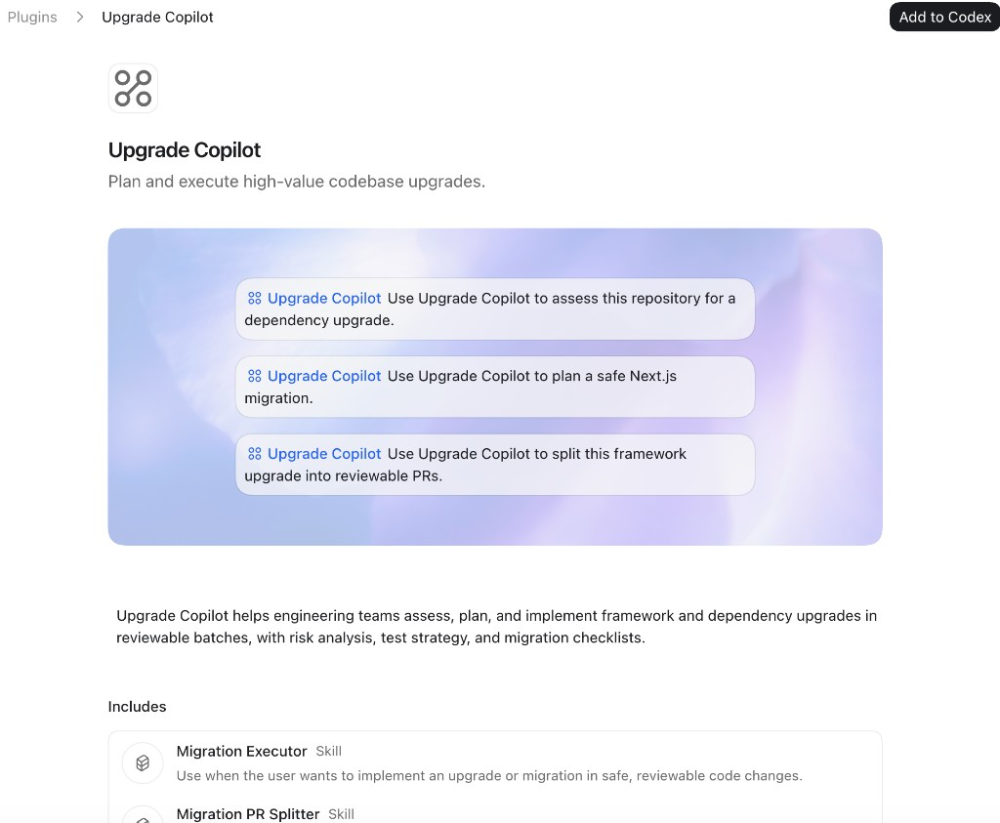

Next.js starter
Major framework, auth, query, Tailwind, TypeScript, and CI-readiness risk.

Upgrade CopilotUpgrade Copilot gives Codex a focused workflow for dependency, framework, runtime, and CI upgrades: assess risk, map breaking changes, diagnose failures, and split the work into PRs a team can review.

This is a real browser recording of the live prototype: paste a repo, generate a report, copy/export it, and capture premium interest.
Upgrade Copilot is public and installable today through Codex's custom marketplace flow.
Source: ChaoYue0307/upgrade-copilot
Git ref: main
Sparse paths:
I tested the product idea against public repositories with visible upgrade pressure: Next.js, React/Vite, and Django template workflows.
The repo has a real upgrade opportunity, but not a safe one-shot dependency bump. Upgrade Copilot turns that ambiguity into a staged migration plan.
Major framework, auth, query, Tailwind, TypeScript, and CI-readiness risk.
Modern frontend tooling risk across Vite, Vitest, TypeScript, ESLint, React, and routing.
Python framework migration risk across Django settings, static files, database config, and deployment.
The first paid-product prototype is live for public GitHub repositories. It runs in browser mode by default and can use the local backend to save reports once configured.
The prototype proves demand with a useful public scan. A local backend is now included for server-side scans, source impact mapping, optional LLM analysis, and saved report links.
Not a generic prompt pack. Each skill targets a job developers repeat when dependency updates become risky.
Separate safe patches, risky majors, abandoned packages, and framework-coupled upgrades.
Connect release notes and migration guides to local files, symbols, configs, and tests.
Work from logs back to the smallest responsible upgrade change and validation command.
Implement the smallest useful batch first and keep unrelated refactors out.
Turn large migrations into reviewable PRs with clear rollback notes and merge order.
Create a ranked upgrade backlog and 30/60/90-day roadmap that a team can fund.
It does not replace dependency bots or migration docs. It helps Codex turn those inputs into repo-specific upgrade execution.
These are the situations where the plugin should feel immediately useful.
Use Upgrade Copilot to find the safest dependency upgrades in this repo and split them into low-risk batches.
Use Upgrade Copilot to map breaking changes before upgrading this Next.js app and propose a staged PR plan.
Use Upgrade Copilot to diagnose why CI started failing after this dependency update and identify the smallest fix.
Use Upgrade Copilot to build a 30/60/90-day upgrade backlog with risk, effort, and validation notes.
Upgrade Copilot nudges Codex toward the same process a senior engineer would use for a risky migration.
Read manifests, lockfiles, configs, CI, tests, and runtime constraints.
Separate safe updates from risky majors and framework-coupled changes.
Choose the smallest test, build, typecheck, or smoke command that proves progress.
Split changes into PRs with reviewer context, rollback notes, and remaining risk.
Short answers for install, trust, and product direction.
No. It is a public custom marketplace source for Codex, not an official OpenAI listing.
Yes. The plugin is free today. Future premium services may add hosted scans, GitHub automation, and team dashboards.
Those tools open version bump PRs. Upgrade Copilot focuses on migration reasoning: risk, sequencing, validation, rollback, and reviewer context.
Only when you ask Codex to implement a migration batch. Your normal Codex approval and execution settings still apply.
The plugin proves the workflow. The paid product can add hosted repo scans, curated migration knowledge, GitHub automation, and team dashboards for organizations with upgrade debt.
Premium playbooks, hosted scans, and upgrade reports for individual projects.
Repo dashboards, upgrade risk scores, ownership tracking, and automated PR batches.
Multi-repo upgrade programs with migration status, rollout risk, and executive visibility.